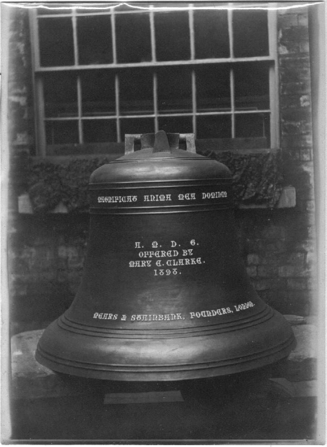
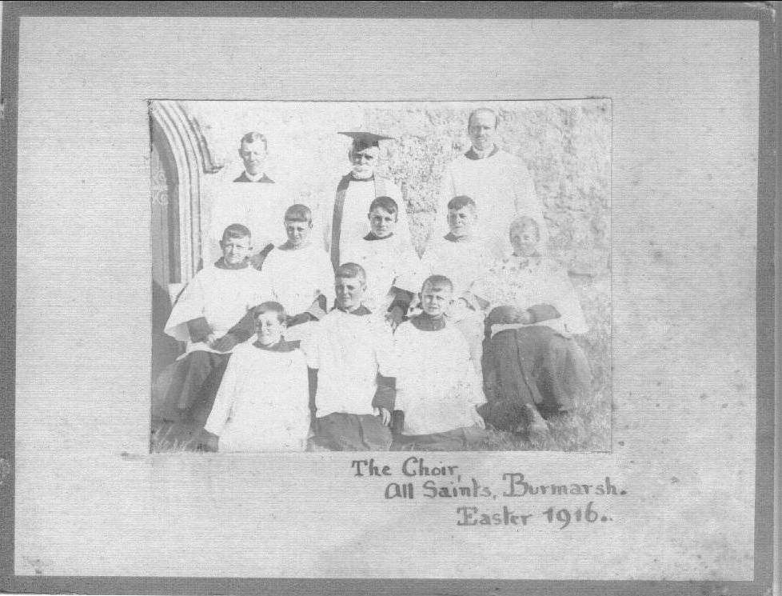
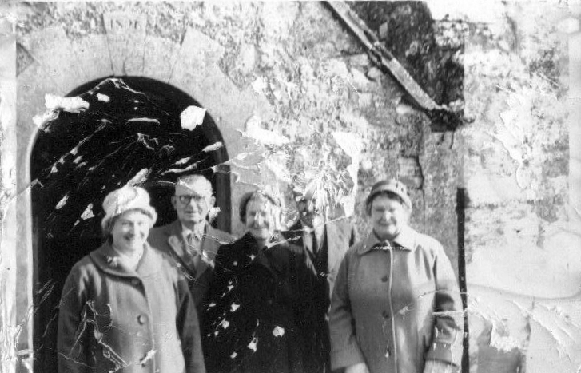
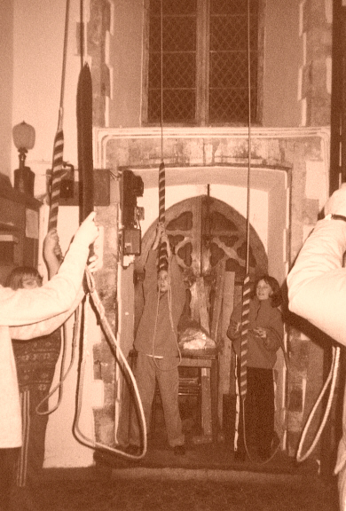
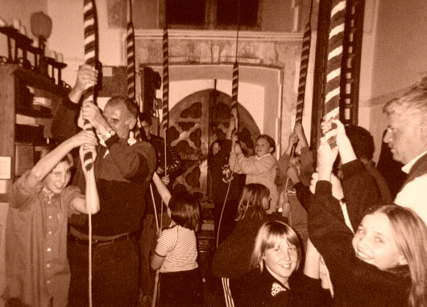
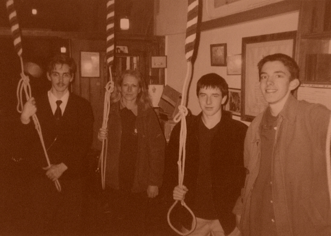

All Saints, Burmarsh
|

| Treble | 4 cwt | 1925 | Mears & Stainbank |
| 2nd | 4¾ cwt | 1891 | Mears & Stainbank |
| 3rd | 5 cwt | 1375 | William Burford |
| 4th | 6 cwt | 1375 | William Burford |
| 5th | 7 cwt | 1925 | Mears & Stainbank |
| Tenor | 9-3-12 | 1891 | Mears & Stainbank |
| Old 5th | 7cwt approx | 1450 | John Danyell |
Sound Clip:
PART OF A HALF-MUFFLED QUARTER PEAL OF LONDON S. MINOR FOR ARMISTICE 2001Ringing Times
| Practice: | Thursday 7:00 - 8:30pm |
| Sunday: | 8:30 - 9:15am |
Members
| Ringing Master & Choirmaster: | C.J. Cooper FGMS |
| Members: (* Junior member) |
Florence Homewood (Capt)* Eleisha Lockwood [P]* (Dep. Capt) Lauren Harber [P]* Aby Buck [P]* Sam Clarke [P]* Lee Kershaw [P]* Natalie Kershaw [P]* Elisabeth Schwartz [P]* James Schwartz M.C.R. Wood (Ch.Warden & Sec) |

Tower History
| 1375 | Two bells cast by William Burford of London (Present 3rd & 4th) |
| 1450 | Bell cast by John Danyell, giving a minor ring of 3. This bell is currently disused and displayed by the rood screen in the church. |
| 1898 1899 |
Tower restored, and new Treble & Tenor cast by Mears &
Stainbank of London to fit around the other 3 bells giving a major ring
of 5 and all bells hung in a new oak frame. £204.18/-3d was collected toward defraying expenses. On February 4th the Hythe ringers rang a Peal on the bells, newly rehung and augmented to 5. 
The new Tenor outside Whitechapel foundry after casting
 Burmarsh Choir, 1916 |
| 1925 | Fourth of the ring of five discovered to be cracked
and so a new bell was cast to replace this. A treble was also
added (in its own frame above the back 5) to make a ring of six. Sensibly, the Church resolved to retain
the old bell, and preserved it outside the church porch . 
The old band, Easter Day 1954 - Mrs Watts, Mr Watts, Miss Rayner, Mr Fagg, Mrs Wratten.
|
| 1970's | Bells rehung on ball bearings by KCACR bell restoration team. |
| 1980's | The church sensibly decided to remove the old bell from the porch where it had stood for many years, and placed it in its current position in front of the rood screen. During this decade too, all the remaining members of the old band died. These included Miss Rayner, Mr Fagg, Mrs Watts and Mrs Wratten. By c.1990 ringing had virtually died out in the Parish |
| 1998 | The current Guild Secretary instructed a young band
of ringers at the tower. A large number of youngsters came along
and learned the art. Practices were held each Monday.
Several stayed the course, and Misses Gifford & Cox rang in
several Quarter Peals. 
|
| 2001 |

Thanks to monies raised by the Junior band who arranged a Disco in the
Parish Hall, and money from the belfry fund, a complete set of six new
ropes were purchased, with terylene top-ends. A Quarter Peal was
rung on the bells, the ringers pictured above. |
| 2003 | Practice nights changed to Thursdays, and latterly the 3rd Thursday of each month, as a regular RM&DG practice. |
| 2006 | Following amalgamation of this Parish with the Romney group of Parishes in 2005, practice night has been changed to 2nd Wednesday. |
| 2011 | A new band of Junior members began to learn; the inaugural practice being held on Thursday 19th May 2011. Regular Sunday service ringing resumed for the first time in nearly 30 years from August 2011. In December a Ringers' Choir was formed and sang Midnight Mass as their first service. |

Burmarsh Choir Easter Morning 2012

Burmarsh Church Choir, Congregation, Bellringers, Wardens, and Rev Cowling (Focal Minister) Easter Morning 2012

Ringing for a wedding at Burmarsh; 2008